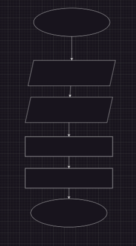
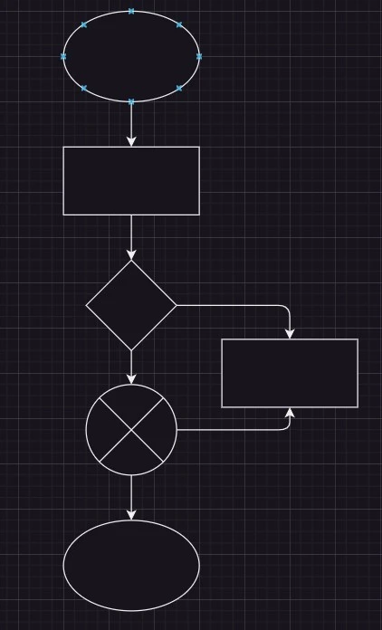
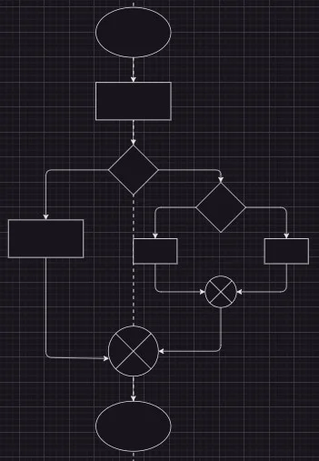
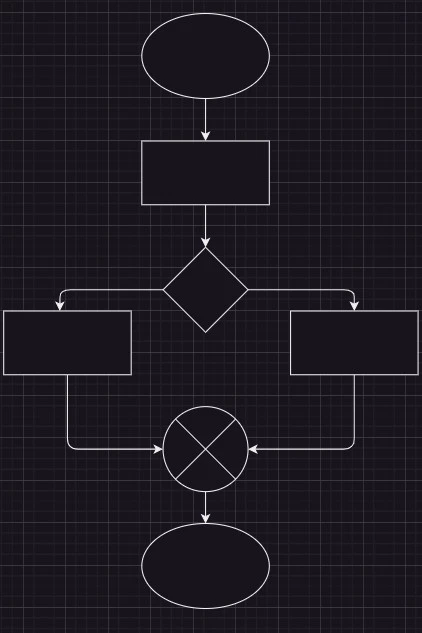
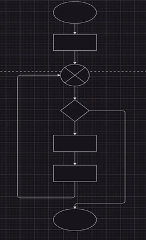
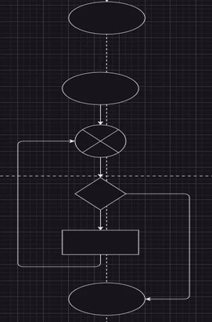

Estructuras de Control
Las estructuras de control en programación son fundamentales para gestionar el flujo de ejecución de un programa. Estas estructuras permiten que un algoritmo tome decisiones, repita acciones o siga un flujo secuencial, lo que es esencial para resolver problemas de manera efectiva.
A continuación podemos observar las diferentes estructuras de control:

Secuencial o Lineal: Estas son las más básicas y representan la ejecución lineal de instrucciones, donde cada acción se lleva a cabo en el orden en que se escriben.

If: La estructura de control if, permite ejecutar un bloque de código solo si se cumple una condición específica.

If Anidado: if anidado coloca una estructura if dentro de otra. Esto permite evaluar múltiples condiciones de manera jerárquica y tomar decisiones más complejas en función de los resultados de esas evaluaciones.

If/Else: Esta estructura permite ejecutar un bloque de código cuando una condición es verdadera y otro bloque cuando la condición es falsa.

While: es utilizada para repetir un bloque de código mientras una condición se evalúe como verdadera.

Do While: es un tipo de bucle que asegura la ejecución del bloque de código al menos una vez antes de evaluar la condición.
.jpg)
Case: se utiliza para ejecutar diferentes bloques de código en función del valor de una variable o expresión.